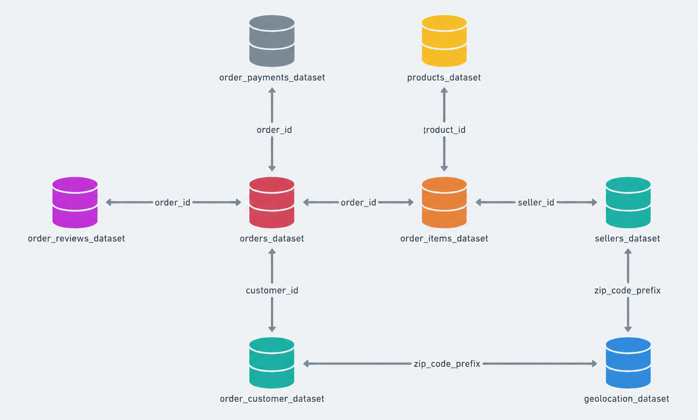
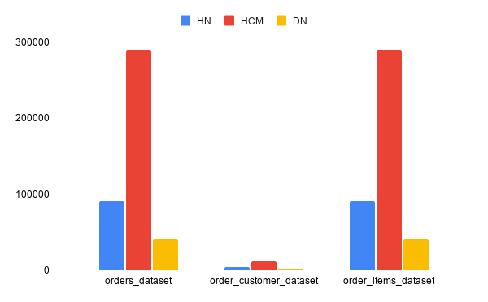
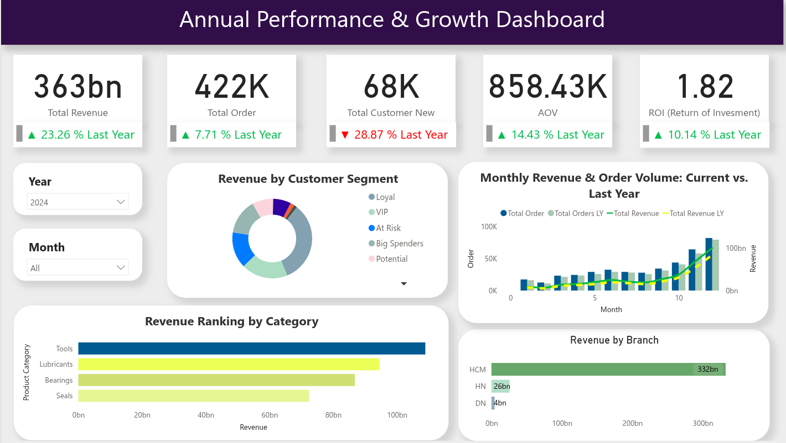
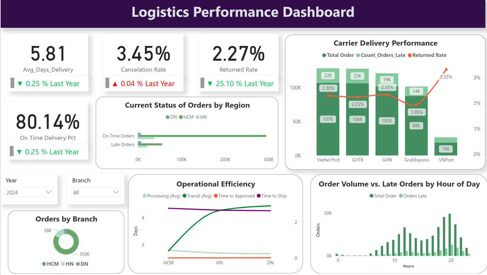
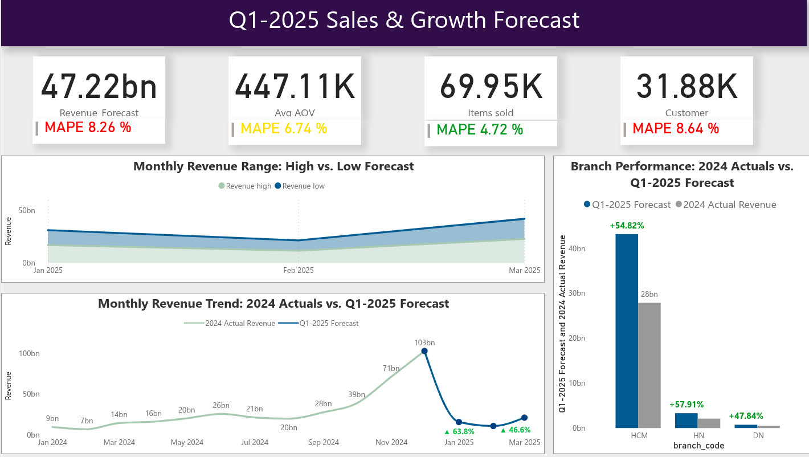

Dữ liệu được thiết kế với mô hình Star Schema với bảng fact là order dataset, order item dataset. Các bảng dimension bao gồm: order payments dataset, products dataset, sellers dataset, geolocation dataset, order customer dataset, order reviews dataset.
Dữ liệu lưu trữ trên PostgreSQL theo kiến trúc Medallion (Bronze – Silver – Gold)

Dữ liệu được thực hiện giả lập trên trên 2 nguồn khác nhau là CSV (HN,DN) và RDBMS (HCM). Với 2 nguồn đại diện cho 3 chi nhánh khác nhau, việc giả lập giúp tổng hợp dữ liệu từ nhiều chi nhánh để thành 1 kho lưu trữ duy nhất trên Data Warehouse.
Tổng số lượng đơn hàng trong 3 chi nhánh khoảng 422.000, trong đó Hồ Chí Minh chiếm hơn 65% trên tổng số.

📈 Sales Performance & Growth
Doanh thu đạt 331 tỷ (+23%). Tuy nhiên, lượng khách hàng mới giảm mạnh 30% (~28,000 khách). Doanh thu hiện dựa vào tệp Loyal, Vip. Bên cạnh đó, 15% khách hàng đang ở nhóm có nguy cơ rời bỏ cao At Risk.
📦 Product
Nhóm Tools dẫn đầu (100 tỷ), theo sau là Lubricants và Bearings.
Số đơn hàng và doanh thu tăng tuyến tính từ giữa các tháng và tăng nhanh vào các tháng trong quý 4.
💰 Marketing ROI
Chỉ số ROI đạt 1.82 cho thấy chiến lược của công ty đang mang lại doanh thu ổn định.
Nhìn vào việc khách hàng giảm ta thấy được chiến lược đang ảnh hưởng trên tập khách hàng trung thành thay vì tập khách hàng mới.
📈 Sales Performance & Growth
Doanh thu đạt 331 tỷ (+23%). Tuy nhiên, lượng khách hàng mới giảm mạnh 30% (~28,000 khách). Doanh thu hiện dựa vào tệp Loyal, Vip. Bên cạnh đó, 15% khách hàng đang ở nhóm có nguy cơ rời bỏ cao At Risk.
📦 Product
Nhóm Tools dẫn đầu (100 tỷ), theo sau là Lubricants và Bearings.
Số đơn hàng và doanh thu tăng tuyến tính từ giữa các tháng và tăng nhanh vào các tháng trong quý 4.
💰 Marketing ROI
Chỉ số ROI đạt 1.82 cho thấy chiến lược của công ty đang mang lại doanh thu ổn định.
Nhìn vào việc khách hàng giảm ta thấy được chiến lược đang ảnh hưởng trên tập khách hàng trung thành thay vì tập khách hàng mới.

⏱️ Process Bottlenecks
Việc thiếu ca tối khiến 40% đơn hàng sau 20h bị trễ 8-10 tiếng. Chỉ số OTD thấp chủ yếu do khâu xử lý nội bộ, không phải do vận chuyển.
🚛 Carrier Performance
VNPost tại miền Bắc/Trung trễ kỷ lục (30-50%). Cần thay thế bằng các đơn vị Top Performers như GHTK/Viettel Post để đồng bộ chất lượng.
🚀 Strategic Action
Triển khai ca trực tối tại HCM để giảm xử lý đơn xuống 2 ngày. Mục tiêu tăng LTV và tối ưu hóa hiệu quả ngân sách Marketing.

🔮 Growth Projection
Doanh thu Q1 dự kiến tăng [X]%. Xu hướng AOV giảm nhưng Customer tăng là cơ hội vàng để thực hiện các chiến dịch Customer Acquisition quy mô lớn.
📍 Regional Demand
Khu vực HCM dự báo tăng trưởng ~54%. Yêu cầu cấp thiết về việc tối ưu hóa quy trình đóng gói và vận chuyển để bảo vệ uy tín thương hiệu tại thị trường lõi.
📊 Model Reliability
Với chỉ số sai số MAPE 6-8%, các con số dự báo cung cấp nền tảng vững chắc cho việc lập kế hoạch tồn kho và điều phối nhân sự trong giai đoạn cao điểm.